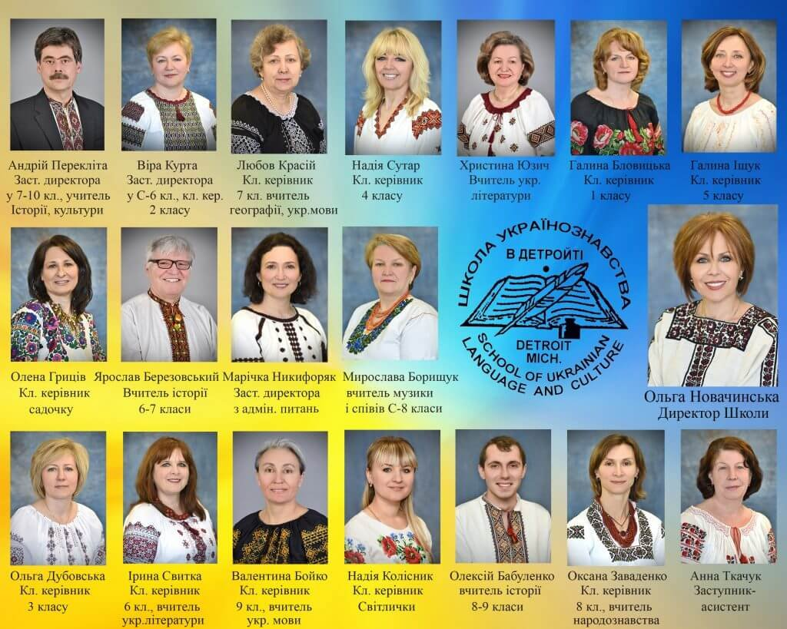

Вітаємо в Рідній ШколіWelcome to Ridna Shkola
Школа Українознавства Товариства «Рідна Школа» в Детройті відзначила своє 75-ліття у 2026 році.
The School of Ukrainian Language and Culture of the Ridna Shkola Society in Detroit celebrated its 75th anniversary in 2026.
Вже понад 75 років школа українознавства «Рідна Школа» м. Детройту обігріває своєю любов’ю не одне покоління українців на американській землі. Саме тут батьки довіряють нашим вчителям найдорожче: своїх дітей, їхнє майбутнє, у надійні руки досвідчених педагогів, котрі вміло навчають їх рідної мови, культури, історії та національних надбань народу.
«Метою школи українознавства є і буде забезпечення систематичного виховання молоді поза Україною, а також збереження її від процесу денаціоналізації та навчити її бути українцями на чужині».М. Дольницький та І. Білоус, першозасновники школи
Ця мета залишається спільною для сучасних і наступних поколінь батьків, вчителів та діячів школи. Бо, за словами педагога К. Ушинського, мова є найживіший, найбагатший і найміцніший зв’язок, що з’єднує покоління народу в одне велике історичне живе ціле.
І сьогодні, коли наші брати і сестри відвойовують українську суверенність, нам усім необхідно усвідомити нашу роль у цих історичних подіях. Бо де, як не в школі українознавства, діти з ранніх літ вчаться розуміти красу рідного слова, пошану до історичного минулого, виховуються патріотами Рідного Краю. Але без родини, без підтримки батьків, школа не доб’ється того результату, на який покладає надії кожний учитель. Школа чекає на співпрацю. Тільки разом ми виховаємо наших дітей справжніми українцями.
Дирекція Рідної Школи м. Детройту
For more than 75 years, Ridna Shkola in Detroit has welcomed generation after generation of Ukrainian American children. Parents entrust their children to experienced teachers who pass on the Ukrainian language, culture, history and national heritage.
"The purpose of the School of Ukrainian Studies is, and will remain, to give young people outside Ukraine a systematic upbringing, to guard them from losing their national identity, and to teach them to be Ukrainian abroad."M. Dolnytsky and I. Bilous, founders of the school
That purpose is shared by today's parents, teachers and volunteers, and by those who will follow. Language, as the educator K. Ushynsky wrote, is the living bond that joins past, present and future generations of a people into one whole.
Today, as Ukraine defends its sovereignty, each of us has a part to play. Nowhere else do children learn from an early age to love their native word, respect their history and grow up as patriots of their homeland. But the school cannot succeed without families: we count on parents as partners. Only together will we raise our children as true Ukrainians.
The Administration of Ridna Shkola, Detroit
Коротко про школуAt a glance
- 1951Рік заснування; 75-ліття відзначено у 2026 роціFounded; 75th anniversary celebrated in 2026
- КласиGradesДошкілля, 1–11 клас; у 11 класі учні складають матуруPreschool and grades 1–11; grade 11 sits the matura exams
- ПредметиSubjectsУкраїнська мова, література, історія, географія, народознавство, культураUkrainian language, literature, history, geography, folk studies, culture
- МережаNetworkШкола працює за вимогами Шкільної Ради при УККАA member school of the Ukrainian Education Council (UCCA)
- ДеWhereВоррен, Мічиган (передмістя Детройта)Warren, Michigan (metro Detroit)
Педагогічний колективOur teachers

Контакти учителів: див. сторінкуTeacher contacts: see the КонтактContact page.